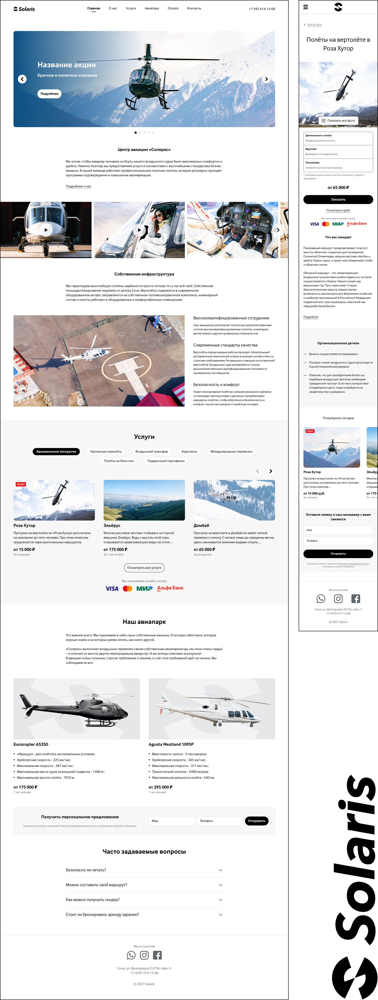
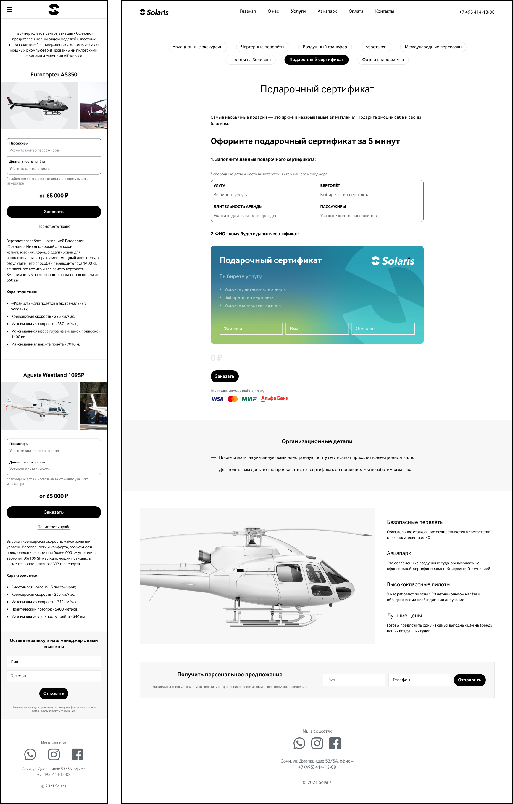

Solaris aero
"Solaris" занимается услугами авиаперевозки в Южном федеральном округе.
Я спроектировал удобный сайт, который мотивирует посетителя арендовать вертолёт или заказать экскурсию. Старался минимизировать любой визуальный шум, весь фокус на контенте. Рисовал максимально чистый, понятный и юзабельный интерфейс.

Постарался решить боль менеджмента и автоматизировал ряд пользовательских паттернов. Различные формы, точки коннекта — собирают и помогают фильтровать обратную связь.

Исходник в Figma:
Ссылка, если не грузится
Над проектом работал в связке:
Figma - HTML / CSS